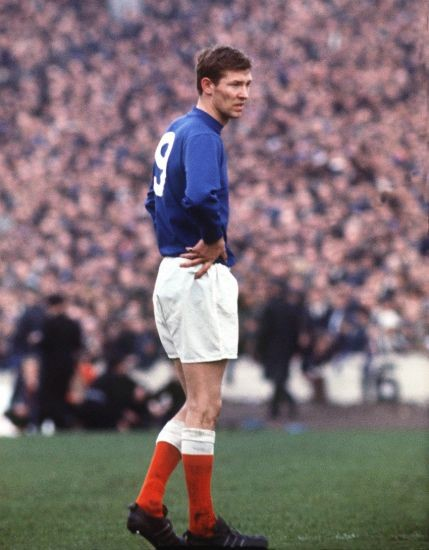

Chương 7

rong ngày ký hợp đồng, một thành viên ban lãnh đạo Rangers hỏi Alex:
-Vợ anh theo đạo gì?
Một câu hỏi vu vơ, thông thường chăng?
Xin thưa: Không thông thường chút nào!
Vào thời điểm ấy, thậm chí cho đến tận ngày nay, Công giáo và Tin Lành ở Vương Quốc Anh chẳng ưa gì nhau, và bóng đá chẳng qua cũng chỉ phản ánh hình ảnh xã hội. Trong 2 Cụ Cố[1] của làng bóng Scotland, Celtic là đội của người Công giáo, trong khi Rangers là CLB Tin Lành.Nhưng trong khi Celtic vẫn sử dụng cầu thủ Tin Lành, quy tắc bất thành văn ở Rangers là không bao giờ tuyển người Công giáo.Nếu không tính một vài ngoại lệ vào đầu thế kỷ 20, họ luôn tuân thủ quy tắc đó. Tuyển thủ Scotland Danny McGrain khi còn trẻ từng bị Rangers từ chối, chỉ vì McGrain “có vẻ” như là họ của người Công giáo. Trên thực tế, ông là một tín đồ Tin Lành.Bị Rangers hắt hủi, ông đầu quân cho Celtic, giúp cho Celtic “đè đầu” Rangers trong suốt một thập kỷ liền. Mãi đến năm 1989, trước lời đe dọa của Liên Đoàn Bóng Đá Châu Âu(UEFA) sẽ cấm cửa Rangers, họ mới chịu bãi bỏ quy tắc và ký hợp đồng với cầu thủ Công giáo Mo Johnston.
Theo đạo Tin Lành, Alex Ferguson đủ “điều kiện” khoác áo Rangers, nhưng việc Cathy theo Công giáo khiến nhiều người ở CLB không hài lòng, trong số đó có Willie Allison, giám đốc phụ trách quan hệ công chúng. Mà Allison đã ghét ai là người đó tới số, do ông ta có ảnh hưởng rất lớn với chủ tịch John Lawrence. Trước khi đến Ibrox, không phải Alex không biết đến những vấn đề tế nhị về tôn giáo, chỉ là anh bất chấp chúng, vì tình yêu quá lớn giành cho Rangers.Vả lại, Scot Symon, HLV Rangers là một người công chính.Khi ông còn nắm quyền, không ai đụng được vào Alex.Một trong những trợ lý của Symon, Bobby Seith, cũng rất có cảm tình với Alex. Khi Alex theo học lớp HLV năm 1965, chính Seith là thầy hướng dẫn cho anh.
Thời gian đầu tại Ibrox, Alex cảm thấy hạnh phúc như đang trên thiên đàng.Anh tận hưởng cuộc sống của một ngôi sao, và choáng ngợp trước không khí cuồng say của những trận derby Rangers – Celtic. “Tôi đã xem Milan-Inter ở San Siro, Real-Barca ở Camp Nou, cũng đã xem Benfica-Porto, và nhiều lần ngồi trên băng ghế huấn luyện trong trận đấu giữa Manchester United và các kỳ phùng như City, Liverpool và Leeds” Sir Alex viết trong hồi ký (2000) “Nhưng không có gì, tin tôi đi – thật sự là không có gì, sánh nổi với derby Celtic-Rangers”. Trong một trận derby ở mùa 1968-1969, chỉ trong vòng 45 phút hiệp một, 9 thẻ vàng đã được rút ra, chia đều cho cả hai bên. Trong giờ nghỉ, cảnh sát đã phải vào tận phòng thay đồ, cảnh cáo hai bên phải bớt thô bạo đi, nếu không muốn khán giả tràn xuống sân hỗn chiến.
Với HLV Scot Symon, Alex luôn luôn kính nể, có lẽ vì phong cách họ tương tự như nhau. Nhìn Symon, người ta có thể thấy hình ảnh của một Sir Alex sau này.Ông dùng kỷ luật thép để trị nhân. Cầu thủ nào dám đút tay vào túi quần khi trò chuyện cùng ông sẽ bị mắng cho không ngóc đầu lên nổi. Nhưng trước mặt người ngoài, ông luôn bảo vệ học trò cho đến cùng, không bao giờ cất nửa lời chê bai hay chỉ trích bất cứ ai.
Dẫn dắt Rangers từ 1954, Symon đã đem về cho Ibrox sáu chức VĐQG.Nhưng sức ép ngày càng đè nặng lên ông, kể từ khi Jock Stein gia nhập Celtic.Symon không kém, nhưng hễ ông làm được tám thì Stein làm được chín, ông làm được chín, Stein làm được đến mười. Như năm 1967, Rangers giành điểm số rất cao tại giải VĐQG, chỉ để thua đúng ba trận suốt cả mùa, nhưng Celtic vẫn vô địch vì thua có hai! Cũng năm đó, Rangers lần đầu tiên trong lịch sử vào đến chung kết cúp C2, chỉ chịu thua trong hiệp phụ trước một “siêu Bayern” của những Beckenbauer, Maier và Mueller, nhưng kỳ tích ấy bỗng trở thành chuyện nhỏ khi đặt cạnh cúp C1 của Celtic. Than ôi! “Trời đã sinh Du sao còn sinh Lượng!”
Nếu Rangers để Symon ra đi vào cuối mùa 1966-1967, đó là một quyết định có thể chấp nhận được. Nhưng họ giữ ông lại, để sa thải ông vào tháng 11 năm 1967, khi mùa bóng mới chưa qua được nửa chặng đường, và khi Rangers đang dẫn đầu giải VĐQG với thành tích bất bại. Trên đời lại có chuyện HLV bị sa thải khi CLB đang dẫn đầu hay sao? Vâng, thật là có.Nó đã diễn ra ở Ibrox.
Và độc giả có biết Rangers chia tay người HLV đã gắn bó với Ibrox suốt mười ba năm ra sao không?
Họ sai một nhân viên kế toán quèn đến, báo cho Symon biết ông bị sa thải!
Nghe được tin Rangers sa thải Symon như thế nào, Alex Ferguson nổi giận đùng đùng. Anh lập tức đến gặp tân HLV David White, đề nghị được chuyển nhượng. Tuy vậy, cuối cùng anh đổi ý, chịu ở lại Ibrox, theo lời khuyên của Bobby Seith.
“Sự nghiệp của cậu chỉ vừa bắt đầu thôi, chẳng lẽ cậu muốn vứt bỏ đi tất cả sao?”Seith phân tích “Thử nghĩ xem, liệu Symon có muốn cậu hành xử như thế này không?Điều tốt nhất cậu có thể làm cho ông ấy lúc này là cố gắng chơi cho thật hay”.[2]
Lên thay Symon giữa chừng, David White không thực hiện thay đổi gì lớn, và vẫn giữ Alex ở vị trí tiền đạo. Bước vào giai đoạn cuối của mùa bóng, Rangers vẫn đứng trên Celtic, song Jock Stein quyết không chịu thua, ông tung ra đòn tâm lý. “Rangers chắc chắn vô địch rồi”, Stein nói, “Trừ khi họ tự quăng cúp đi thôi.” Chỉ một lời nói mà dường như trút lên vai đối phương gánh nặng ngàn cân. Từ đó trở đi, phong độ của Rangers đi xuống, và rốt cuộc, họ…tự quăng cúp đi thật!Về sau, khi đã trở thành HLV, Alex sẽ thường xuyên sử dụng đòn này của Stein.
Thật ra, tuy hơi xuống dốc vào cuối mùa, nhưng phong độ Rangers năm đó vẫn cực kỳ ấn tượng. Thi đấu 34 trận, họ chỉ thua duy nhất một, giành tới 61 trên tổng số 68 điểm, tức là chỉ đánh mất đúng bảy điểm mà thôi[3]. Vấn đề là Celtic lại ghi tới 63/68. Ta lại thấy một lần nữa: Rangers không hề kém, nhưng Celtic quá “khủng”!
Có điều, cổ động viên không cần biết đến những số liệu đó, họ chỉ biết một điều: Dẫn đầu bảng suốt cả mùa giải, mà cuối cùng lại trắng tay là không thể chấp nhận được. Sau khi Rangers thua Aberdeen, chính thức “trao” cúp vào tay Celtic, các fan nổi điên, đập vỡ kính phòng thay đồ, vây kín SVĐ, khiến cầu thủ co ro ở trong, không dám ló đầu ra ngoài. Hôm đó, Alex lại có hẹn đi chơi cùng bạn cũ. Anh phải gọi điện cho bạn, nhờ bạn đánh xe đến đậu ngay trước cửa SVĐ. Khi người bạn đến nơi, Alex từ trong sân phóng ra, chui vội vào xe, vậy mà vẫn bị một fan rượt kịp, đá cho một cú! Bị đá kể cũng hơi oan, vì trong mùa giải đầu tiên tại Ibrox, Alex chính là người ghi nhiều bàn thắng nhất cho Rangers, với 24 bàn trên tất cả các mặt trận.
Con số 24 bàn che dấu một sự thật: Giữa Alex Ferguson và HLV David White không hề có sự đồng điệu. “Tôi và ông ta không khi nào nhìn thẳng vào mắt nhau”, Alex nói. Về phần White, có lẽ ông có thành kiến với Alex, vì ngay lúc ông vừa nhậm chức, anh đã tới “nộp đơn” đòi được chuyển nhượng. Hơn nữa, khi lên cầm quyền tại Ibrox, ông giao thêm cho Alex nhiệm vụ…kèm người trong mỗi trận đấu.Một trung phong như Alex dĩ nhiên từ chối nhiệm vụ ấy, khiến cho mâu thuẫn sâu lại càng sâu. Theo lời kể của Alex, dường như White còn chịu cả áp lực từ ban lãnh đạo Rangers, đòi phải tống khứ đi tên cầu thủ có vợ là người Công giáo[4]. Người mạnh mẽ như Symon chống lại được áp lực đó, nhưng White thì không.
Ngay trước lúc mùa giải 1968-1969 bắt đầu, các báo thể thao hàng đầu Scotland đồng loạt đăng tin: Ferguson không còn tương lai ở Ibrox.Cho rằng giám đốc quan hệ quần chúng Willie Allison dàn dựng vụ này để tống khứ mình, Alex tìm đến Allison, lôi đầu ông ta ra…chửi cho một trận! Không cần phải nói, việc đó chỉ khiến cho tương lai anh trở nên đen tối thêm.Ít lâu sau, David White gọi Alex lên văn phòng, cho biết CLB muốn dùng anh để đổi lấy tiền đạo Colin Stein của Hibernian.Với tính cứng đầu cố hữu, Alex nhất quyết từ chối. Kết quả: Rangers bỏ ra 100 000 bảng mua Stein, còn Alex bị đày xuống chơi với đội hình hai.
Cả mùa bóng đó, Alex chỉ được gọi lên đội một khi Colin Stein chấn thương, hoặc khi phong độ trên hàng tiền đạo Rangers quá tệ.Ra sân tổng cộng có 22 lần, anh vẫn ghi được đến 12 bàn thắng. Điều này chứng tỏ rõ: Alex phải xuống đội hai là do bị trù dập, chứ không phải do phong độ sa sút. Vào cuối mùa, bởi chấn thương của Stein, anh được dự trận chung kết cúp QG. Không may, Rangers thua lấm bụng bốn bàn trắng trước Celtic.Alex thất vọng đến nỗi quẳng luôn tấm huy chương bạc vào sọt rác.
Đến mùa 1969-1970, Alex hoàn toàn bị loại khỏi đội một. Anh phải chơi cùng đội hình hai, thậm chí là đội trẻ, hằng tuần ra sân gặp những đối thủ nghiệp dư như Đại Học Glasgow, Giao Thông Vận Tải…Nếu là người khác chắc sẽ chẳng buồn đá, nhưng Alex thì khác. Tuy thất vọng, Alex không bao giờ đánh mất khát vọng chiến thắng. Đối với anh, không ra sân thì thôi, đã ra là phải quyết thắng, dù đối thủ là Celtic hay đội bóng trường làng, thì vẫn chỉ một quyết tâm đó mà thôi. “Ảnh chẳng bao giờ than phiền cả”, một cầu thủ trẻ nhớ lại “Trong những trận tôi chơi chung cùng ảnh ở đội hình hai, ảnh đều cống hiến 100% sức lực.”
Vì có bằng cấp, Alex cũng được các HLV đội trẻ nhờ giúp họ trong công tác huấn luyện.Cầu thủ trẻ phần nhiều đều mến Alex. Những anh lớn khác nào có biết bọn trẻ là ai, chỉ có Alex là thuộc tên từng người và luôn tận tình chỉ bảo, hỏi han. Khi David White phát hiện ra Alex thực chất đang làm…HLV, ông ta cách ly anh bằng cách bắt anh phải tập một mình, và chỉ thị cho cấp dưới không được cho anh ra sân. Như thế có nghĩa là: Từ tiền đạo hàng đầu của Rangers, Alex từ nay phải ngồi ghế dự bị ngay trong những trận đấu của đội trẻ. Thực là một sỉ nhục ghê gớm! Không trách chi Alex cho rằng 1968-1969 là quãng thời gian đen tối nhất trong đời mình.
Tháng 11 năm 1969, Rangers đồng ý bán Alex cho Nottingham Forest với giá 20 000 bảng. Vẫn “cứng đầu”, Alex ra điều kiện: Chỉ chịu sang Forest nếu được chia 10% phí chuyển nhượng. David White không đồng ý, nhưng trước áp lực của ban lãnh đạo Rangers muốn tống khứ Alex đi cho nhanh, ông đành phải nhượng bộ.Cathy buồn trước viễn cảnh phải chuyển tới Anh, song cũng chấp nhận vì không muốn thấy chồng chịu mãi cảnh đọa đày tại Ibrox.
Giữa lúc ấy, Willie Cunningham, sếp cũ của Alex ở Dunfermline, nay đang huấn luyện Falkirk, gọi tới “Alex, chú muốn gì anh cũng chiều! Đừng sang Forest, đợi anh sang nói chuyện”.
Falkirk chỉ là đội bóng thuộc giải hạng nhì, dĩ nhiên không thể sánh cùng Nottingham Forest.Tuy vậy, lợi thế của họ là Willie Cunningham, người được Alex rất tôn trọng. Một lợi thế nữa: Họ là CLB Scotland.Sau khi hỏi ý Cathy, Alex quyết định xin lỗi Nottingham.
Vài ngày sau, Rangers sa thải David White. Người thay White, Willie Waddell, từ lâu đã ngưỡng mộ Alex. Waddell bày tỏ sự tiếc nuối vì Alex đã sang Falkirk trước khi mình kịp tới Ibrox. Alex cũng tự hỏi: Không biết mọi chuyện sẽ diễn tiến như thế nào, nếu như anh chịu ở lại lâu thêm ít nữa?
Nhưng cứ đặt câu hỏi nếu này nếu nọ thì có ích gì? Sự thật là Alex rời Ibrox trong tay không một danh hiệu. Và cũng không có 40 lần khoác áo tuyển Scotland. Thậm chí một lần cũng không!
Đôi khi người ta lên tới thiên đàng chỉ để chết đi trên ấy!
Ngày bé thơ, Alex luôn mơ được chơi tại Ibrox. Ngày nay, anh không muốn nghe nhắc đến cụm từ “Ferguson, cựu cầu thủ Rangers”…

Alex Ferguson trong màu áo Rangers (Colorsport.co.uk)
[1]Dịch thoát ý. Nguyên văn là Old Firm.
[2] Khuyên như vậy, nhưng chính Seith lại từ chức, rời bỏ Rangers, để phản đối việc CLB sa thải Symon.
[3]Thời đó, một trận thắng chỉ được hai điểm.
[4]Ở Ibrox, lấy vợ ngoại đạo cũng là một cái tội. David Hope, thành viên ban lãnh đạo Rangers, không được bầu làm chủ tịch chỉ vì có vợ là người Công giáo, mặc dù ở thời điểm bầu cử, vợ ông mất đã 10 năm!